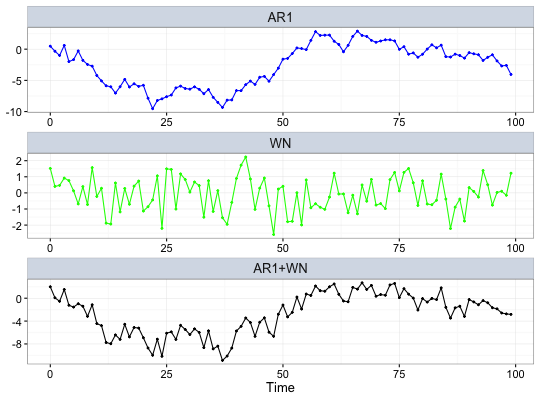
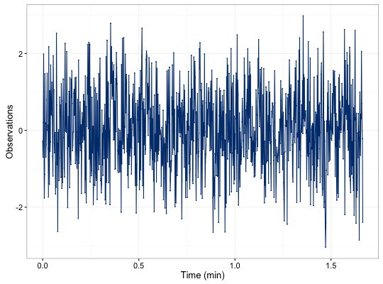

Create a gts object based on a supplied time series model.
gen.gts(model, N = 1000, start = 0, end = NULL, freq = 1, unit = NULL, name = NULL)
ts.model or gmwm object containing one of the allowed models.interger containing the amount of observations for the time series.numeric that provides the time of the first observation.numeric that provides the time of the last observation.numeric that provides the rate of samples. Default value is 1.string that contains the unit expression of the frequency. Default value is NULL.string that provides an identifier to the data. Default value is NULL.A gts object with the following attributes:
This function accepts either a ts.model object (e.g. AR1(phi = .3, sigma2 =1) + WN(sigma2 = 1)) or a gmwm object.
# Set seed for reproducibility set.seed(1336) n = 1000 # AR1 + WN model = AR1(phi = .5, sigma2 = .1) + WN(sigma2=1) x = gen.gts(model, n) x#> Observed #> 1: -0.284459466019749 #> 2: -0.699874162003114 #> 3: 0.204571664351175 #> 4: 1.98365781798293 #> 5: -0.416823968700863 #> 6: -1.76289389826499 #> 7: -1.14770502564025 #> 8: 1.47121165893088 #> 9: 0.166286690785938 #> 10: 0.194799225523839 #> --- #> 991: 0.997325055445442 #> 992: -0.252874247856451 #> 993: -0.648713054058071 #> 994: 0.419159219223511 #> 995: 0.305487040657869 #> 996: 2.05263235547558 #> 997: 0.703514076623703 #> 998: -0.00293560033806073 #> 999: -0.212692433942388 #> 1000: -2.39183224129241 #>plot(x)set.seed(1336) # GM + WN # Convert from AR1 to GM values m = ar1_to_gm(c(.5,.1),10) # Beta = 6.9314718, Sigma2_gm = 0.1333333 model = GM(beta = m[1], sigma2_gm = m[2]) + WN(sigma2=1) x2 = gen.gts(model, n, freq = 10, unit = 'sec') x2#> Observed #> 1: -0.284459466019749 #> 2: -0.699874162003114 #> 3: 0.204571664351175 #> 4: 1.98365781798293 #> 5: -0.416823968700863 #> 6: -1.76289389826499 #> 7: -1.14770502564025 #> 8: 1.47121165893088 #> 9: 0.166286690785938 #> 10: 0.194799225523839 #> --- #> 991: 0.997325055445442 #> 992: -0.252874247856451 #> 993: -0.648713054058071 #> 994: 0.419159219223511 #> 995: 0.305487040657869 #> 996: 2.05263235547558 #> 997: 0.703514076623703 #> 998: -0.00293560033806073 #> 999: -0.212692433942388 #> 1000: -2.39183224129241 #>plot(x2, to.unit = 'min')Unit of object is converted from sec to min# Same time series all.equal(x, x2, check.attributes = FALSE)#> [1] TRUE #>